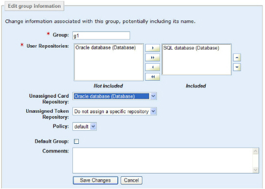

|
IdentityGuard Server 13.0 Administration Guide |
|
IdentityGuard Server 13.0 Administration Guide |
The built-in roles provided with Entrust IdentityGuard permit only an administrator with the superuser role to modify a group. Any administrator with a role that includes the groupSet and repositoryList permissions can accomplish this, too.
There are many reasons why you may need to modify an existing group. For example:
● change the list of repositories associated with the group
● change the policy associated with the group
● change the name of the group
● change whether or not the group is the default group
Note: To be able to disassociate a group from a repository, you must first remove all users belonging to the group from the repository.
1. Log in to the Entrust IdentityGuard Administration interface as the administrator.
 On the
Windows computer where Entrust IdentityGuard is installed
On the
Windows computer where Entrust IdentityGuard is installed
2. Click Groups on the home page.
3. Find the group you want to modify. (See Find a group.)
The View Group page appears and lists all group settings.
4. On the View Group page, click Edit Group.
An editable version of the settings appears.

5. If you store group information in more than one repository, the Repositories option is available. It lists the names and types (database or directory) of each repository.
To add or remove a repository, select it in the applicable list and click the left-arrow or right-arrow. (See Move items between option lists.)
To change the order of repositories, select a repository in the Included list and change its position using either the up-arrow or down-arrow. (See Set repository order.)
6. Optional. Select or change the Unassigned Card Repository. All new cards are created in the new repository, but existing unassigned cards remain in their current repository. To move existing unassigned cards to the new repository, use the card move command in the Master user shell. For detailed syntax, see the Entrust IdentityGuard Master User Shell Reference.
7. Optional. Select or change the Unassigned Token Repository. All new tokens are loaded into the new repository, but existing unassigned tokens remain in their current repository. To move existing unassigned tokens to the new repository, use the token move command in the Master user shell. For detailed syntax, see the Entrust IdentityGuard Master User Shell Reference.
8. Optional. Select a new policy from the Policy list if you want to change the policy.
9. Optional. Select Default Group if you want this group to be the default in cases where a later action does not specify a group. You can have just one default group.
The built-in group named default continues to exist but is no longer used as the default in cases where a group is not specified.
10. Optional. Update the comments entry.
11. Click Save Changes.